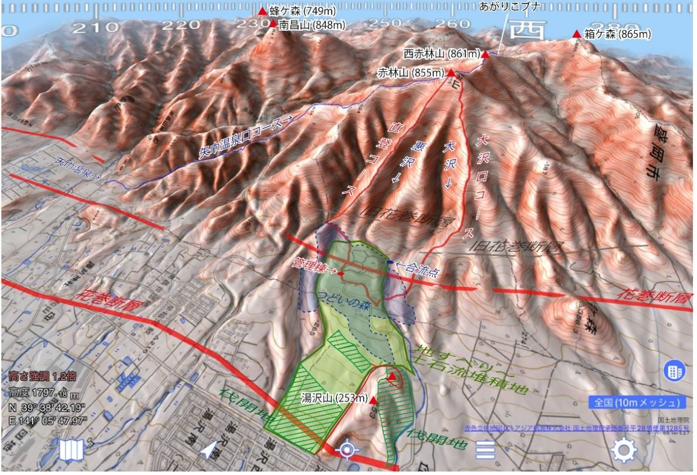
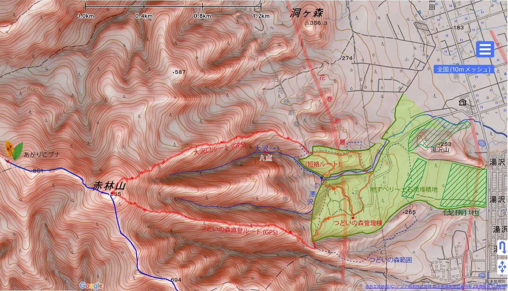
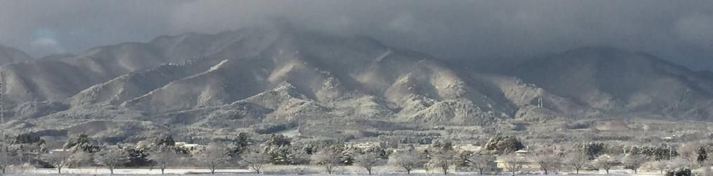
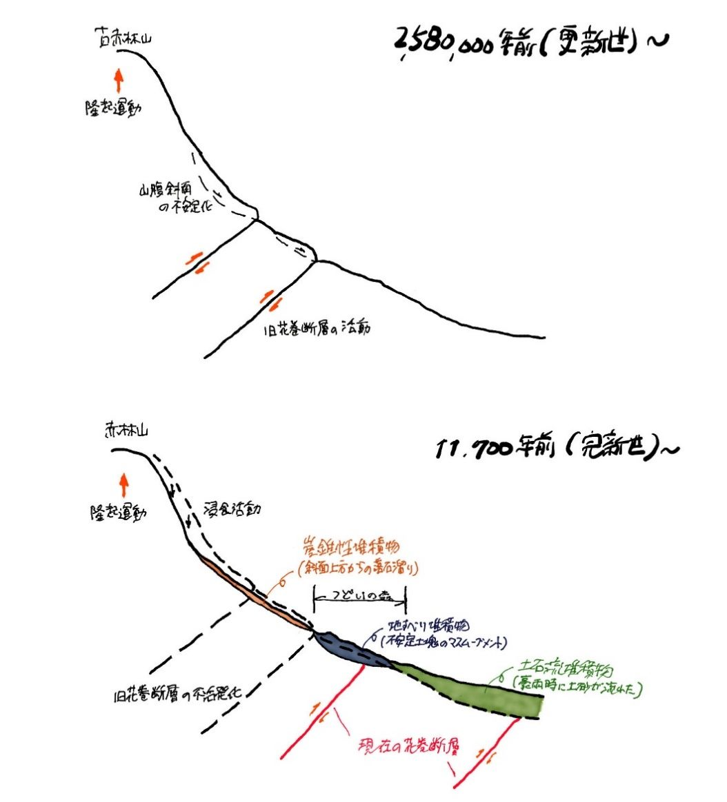
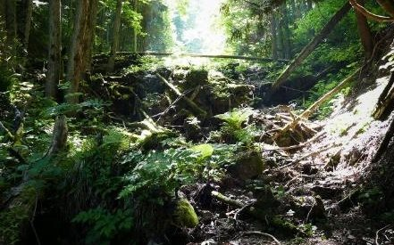

キャンプ場にテントを張るとき、「ここ、ずいぶん平らだな」と思ったことはありませんか。山のすぐふもとなのに、どうしてここだけ平らなのでしょう。その答えは、数千年前にこの場所で起きた、かなり大きな出来事にあります。
先に、結論
- この平らな土地は、赤林山から流れ下った地すべりと土石流の土砂が、断層の上に積もってできた台地です。
- 山を持ち上げるのが断層、持ち上がった山をくずして低地を埋めるのが土砂。この「持ち上げ」と「埋め立て」のくり返しが、いまの地形をつくりました。
- 同じしくみは、これからも続きます。まず起こり得るのは、大雨による土石流と、沢の流れの付け替えです。断層がまた動くのは、国の評価では平均1万6千〜2万6千年に1度で、30年以内の発生確率は「ほぼ0%」とされています。
ことば：活断層＝いまも動く可能性のある、地面の裂け目。土石流＝大雨のときに、土砂と水がいっしょに勢いよく流れ下る現象。くわしくは、記事の最後の「ことばのメモ」をどうぞ。
山のふもとに、ぽっかりと平らな土地
つどいの森は、赤林山（855m）の東のふもとにあります。地形を立体的に表した地図で眺めると、急な斜面が連なるなかに、このあたりだけ平らな土地が広がっているのがよく分かります。キャンプ場も、グラウンドゴルフのコースも、芝生広場も、この平らな土地があるからこそ置けているわけです。

赤色立体地図 ©アジア航測株式会社／国土地理院承認 作図：スーパー地形
この立体的な地図は「赤色立体地図」といって、斜面の急なところほど赤が濃く、尾根は明るく谷は暗く描かれます。影の向きがないので、どちらを向いた斜面でも凹凸がそのまま読み取れるのが利点です。箱ヶ森のページでも、この地図の読み方を紹介しています。
平らな土地は、山が崩れてできた
結論から言うと、この平らな土地は山から流れ下ってきた大量の土砂が積もってできたものです。
赤林山の山頂から東へ、「悪沢（わるさわ）」という沢が流れています。この沢が大量の土砂を運び出し、ふもとに積もらせました。ところが積もった土砂は、やがて悪沢自身の行く手をふさぎます。押し出されるように流れを北へ変えた悪沢は、隣を流れる「大沢（おおさわ）」と合流することになりました。
大沢のほうも事情は同じで、自分が運んできた土砂を避けるように南へ寄っていきます。たがいに押し合うようにして出会った、その合流点は、いまは通行止めになっている遊歩道の丸木橋のすぐ上流で見ることができます。

赤色立体地図 ©アジア航測株式会社／国土地理院承認 作図：スーパー地形
そもそも、なぜそんなに土砂が動いたのか
山の土砂がこれほど大きく動くには、きっかけが要ります。その犯人は、山を押し上げた断層でした。
つどいの森の西側にそびえる志波三山（しわさんざん）。その東のふちには、「花巻断層」という活断層が南北に走っています。活断層とは、いまも動く可能性がある、地面の裂け目のことです。
さらに地形をよく見ると、花巻断層よりも西の山の斜面に、何本もの筋のような地形が読み取れます。これは、もっと古い時代に動いた断層の跡だと考えられます。言ってみれば「昔の花巻断層」で、志波の山々を押し上げた張本人です。
断層で山が持ち上がると、そのふもとには三角形をした斜面がいくつも並びます。「三角末端面（さんかくまったんめん）」と呼ばれる地形で、断層が山をつくった証拠のようなものです。つどいの森の周辺にも、これがきれいに発達しています。

地殻変動のデータを見ると、いまこのあたりの隆起は一時的に止まっているようです。とはいえ、何百万年という地質の時間からすれば、それはまばたきにも満たない一瞬のこと。山が持ち上がる動きそのものが終わったわけではありません。
こうして急に持ち上げられた斜面は不安定になり、やがて大きく崩れました。その土砂がふもとに積もってできたのが、いまつどいの森がある平らな台地と、その下に続く緩やかな斜面なのです。

それは、いつ起きたのか
手がかりは、断層と土砂の前後関係にあります。
つどいの森のど真ん中を、花巻断層が南北に走っています。ところが、この断層は地すべりで動いた土の塊をずらしていません。断層が動いたあとに土砂がかぶさった、ということです。
花巻断層が最後に動いた時期は、花巻市北湯口での調査（断層をまたぐ溝を掘って地層のずれを調べる方法）から、紀元前2200年頃（いまから約4,200年前）と推定されています。国（地震調査研究推進本部）も、花巻断層がふくまれる「北上低地西縁断層帯」の最新の活動を、約4,500年前ごろと評価しています。ただし花巻断層は、何本かの断層が少しずつずれて並ぶ帯のような構造です。南の北湯口で動いたからといって、北端にあたるつどいの森付近まで同時に動いたとは限りません。
日本の活断層が動く間隔は、平均すると1万年に1度ほどといわれます。この断層帯は、それより間隔が長く、国の評価では平均1万6千〜2万6千年に1度です。その尺度で考えると、数千年前に地すべりが起きて断層を覆い、それ以降この場所では動いていない——そう考えるのが自然です。
この土地のできごと
- 約258万年前から昔の断層が動き、志波の山々が押し上げられる。ふもとに三角形の斜面が並ぶ
- 約1万1700年前から隆起と浸食が続き、急になった斜面がだんだん不安定になる
- 約4,500年前（紀元前2200年頃との推定も）花巻断層が最後に動いたと推定される（国の評価、北湯口の調査）
- 数千年前斜面が大きく崩れ、土砂がふもとに積もる。断層をおおって、いまのつどいの森の平らな土地ができる
- 2013年8月9日線状降水帯による豪雨。大沢の中流に土砂が堆積する
- いまその平らな土地の上で、キャンプをしている
- これから（想定）大雨のたびに大沢で土砂が動き、台地の上で流れが付け替わることがある
- 次に断層が動くとき（想定）平均1万6千〜2万6千年に1度。30年以内の発生確率は「ほぼ0%」
沢のなかの、自然のダム
大沢をさかのぼると、落差5mほどの土砂のダムがあります（前の図の「A点」）。人がつくったものではありません。右岸に立つサワグルミの木が、上流から流れてきた倒木をせき止め、そこへ土砂が押し寄せて、ひとりでにダムになったのです。

2013年8月9日、雫石から紫波にかけて線状降水帯による豪雨がありました。このとき、自然にできた土砂ダムはびくともしませんでした。
一方で、100mほど下流にあった治山ダム（山からの土砂を受け止めるためにつくられた施設）では、想定を超える水が落ち口から流れ落ち、その勢いで自分の土台を削ってしまいました。それがきっかけで土石流が発生し、大沢の中流およそ500mにわたって土砂が積もったのです。
自然のままなら軽い被害で済んだかもしれないものが、人の手で設けた施設があったために、かえって大きな土砂の移動を引き起こした——そう言える出来事でした。
持ち上げる断層と、埋める土砂
ここまでの話には、2人の登場人物がいました。山を持ち上げる断層と、山をくずして低地を埋める土砂（地すべり・土石流）です。この2人は、役目こそ反対ですが、よく似たところがあります。
| 断層 | 土石流・地すべり | |
|---|---|---|
| はたらき | 山と低地の高さの差をつくる（持ち上げる） | その高さの差を埋める（山の土砂を低地へ運ぶ） |
| 起き方 | ふだんは静かで、あるとき一気に動く | ふだんは静かで、大雨などのとき一気に動く |
| 間隔 | とても長い（この断層帯は平均1万6千〜2万6千年に1度） | 雨の降り方しだい。断層よりずっと短い |
| 地形に残るもの | 地面の段差、山ろくの三角末端面 | 舌のように広がる堆積物、平らな台地 |
| 順番の手がかり | 土砂にずらされていれば、断層のほうが新しい | 断層にずらされていなければ、土砂のほうが新しい |
いちばん下の行が、「それは、いつ起きたのか」の推理の種明かしです。大きな出来事は、地形に「記録」として残ります。2つの記録の前後関係を読めば、どちらが先かが分かるのです。
2人は、別々に動くのではなく、つながっています。
いつも働いているつながり
- 断層が山を持ち上げる
- 斜面が急になる
- 斜面がくずれ、土砂が低地へ
- 山ろくに台地ができる
断層が動いたときのつながり
- 断層が動く
- 揺れで斜面が崩れる
- 土砂が谷をふさぐ（天然ダム）
- ダムが決壊して土石流
つどいの森が、山と低地の境目で、花巻断層の真上にあるのは、偶然ではありません。断層で山が持ち上がると、山と低地の境目で、斜面の傾きが急にゆるやかになります。流れ下ってきた土砂は、傾きがゆるやかになったところで止まって、積もります。土石流や地すべりの土砂でできた台地が、断層ぞいにできやすいのは、そのためです。
動かして見る：これまでと、これから
ここまでの話を、断面（横から）と平面（上から）の2つの図で、アニメーションにしました。1〜5の段階は、実際にあったことです。6〜10は「想定」で、黄色の破線で描いたものは、まだ起きていません。再生ボタンで10の段階が進みます。番号をクリックすれば、その場面だけを見ることもできます。
模式図です。高さ・距離・時期は、実測値ではありません。色は、この記事の断面図と同じです（オレンジ＝崖錐堆積物、青＝地すべり堆積物、緑＝土石流堆積物、赤＝現在の花巻断層）。
10の段階
- 山が持ち上がる旧花巻断層が動き、志波の山々が持ち上がって、ふもとの低地との間に急な斜面ができます。
- 斜面がくずれ、断層は山ろくへ斜面が削られて岩のかけらがたまり、動く断層は、山ろくの現在の花巻断層に移ったと考えられます。
- 断層が最後に動く約4,500年前、西側が持ち上がって小さな段差ができます。
- 大崩壊が、断層をおおう地すべりと土石流の土砂が断層をおおい、平らな台地ができます。上から見ると、悪沢と大沢が土砂に押されて合流します。
- 2013年の豪雨とこれまで治山ダムが壊れて土石流が起き、大沢の中流に土砂がたまりました。ここまでが、実際にあったことです。
- 【想定A】豪雨がくり返し、川床が上がる大沢にたまった土砂の上に、さらに土砂が積もります。
- 【想定A】あふれて、流れが新しい道を選ぶ水が台地の上に新しい流れをつくり、新しい土石流の堆積物が重なります。
- 【想定B】断層が動き、斜面が崩れる台地に段差ができ、揺れで崩れた土砂が谷をふさぎます。
- 【想定B】天然ダムが決壊するあふれた水が土石流になり、台地へ流れ出します。
- 【想定】台地は持ち上がり、段丘になる数万年のうちに、台地は持ち上げられて階段状の地形になり、新しい土砂は低いほうにたまります。
これから起こり得ること（想定）
ここから先は、断層と土石流のしくみをつなげて考えた「想定」です。国や市の被害想定ではなく、いつ、どのくらいの規模で起こるかを予測するものでもありません。「こういう順番で起こり得る」という筋書きとして、読んでください。
想定A：大雨のたびに、大沢で土砂が動く
いちばん起こりやすいのは、こちらです。山の沢にたまった土砂は、次の大雨で、また下流へ動きやすいことが知られています。2013年に土砂がたまった大沢の中流も、例外ではありません。
大雨のたびに土砂が積もると、大沢の川床が、少しずつ高くなります。川床が高くなると、水はいちばん低いほうへ向きを変えます。台地は、もともと土砂が積もってできた、ゆるやかな盛り上がりです。大沢の水があふれれば、台地の上に新しい流れをつくり、土砂を舌のように広げるでしょう（アニメーションの6・7）。
こうした「流れの付け替え」は、土石流の土砂でできた台地や扇状地では、ふつうに見られる現象です。しかもこの台地では、すでに一度起きています。悪沢は、積もった土砂に押されて流れを北へ変え、大沢と合流しました。同じことが、形を変えて、また起きるかもしれません。
いつ起きるかは、雨の降り方しだいで、予測はできません。ただ、豪雨が増えれば、その機会も増えます。
想定B：断層が次に動くとき
国の評価では、この断層帯は、平均1万6千〜2万6千年に1度動きます。最後の活動から約4,500年ですから、私たちが生きているうちに起こる可能性は、非常に小さいとされています（30年以内の発生確率は「ほぼ0%」）。それでも、断層は、いつかは動くと考えられています。
断層の上にある台地は、断層が動けばずらされます。西側が持ち上がり、台地の中央に段差ができるでしょう。それは、地形のうえでは、ごく自然な成り行きです。山ろくに三角末端面が並んでいるのも、同じことが何度もくり返されてきた証拠でした。
動いたとき、つどいの森の一帯で起こり得ることを、順に並べてみます（アニメーションの8・9）。
- 断層が動き、台地に段差ができる
- 揺れで斜面が崩れる
- 土砂が谷をふさぐ（天然ダム）
- 水があふれ、ダムが決壊
- 土石流が台地へ
2008年の岩手・宮城内陸地震では、各地の谷で山崩れが川をせき止め、天然ダム（河道閉塞）ができました。国が緊急工事を行い、決壊のおそれで避難指示が出た地区もありました。揺れと土石流がつながった、実際にあった例です。
もっと長い時間では
断層が何度も動けば、台地は少しずつ持ち上げられ、川に削られて、「段丘（だんきゅう）」と呼ばれる階段状の地形になります。新しい土砂は、いちだん低い平地の側にたまります（アニメーションの10）。いま私たちが立っている台地も、昔の土砂のたまり場が持ち上がったものでした。持ち上げと埋め立てのくり返しは、数万年、数十万年と続いていきます。
知っておきたいこと
- 園内や周辺の危険度は、国土交通省のハザードマップポータルサイトや、盛岡市の土砂災害ハザードマップで確認できます。
- 大雨や警報が出ているときは、沢や急な斜面に近づかないでください。
- この「想定」は、土地の成り立ちを理解するための筋書きです。園内の安全に関する最新のご案内は、施設からのお知らせをご覧ください。
これから考えていくこと
この一帯は国有林で、治山ダムは必要があってつくられた施設です。下流には湯沢団地があり、災害時に避難が難しい方が利用する施設もあります。治山施設をさらに増やす計画が進められてきた背景には、そうした事情があります。
日本の砂防・治山の取り組みは、これまでそれなりにうまく働いてきました。けれども温暖化によって豪雨が頻発するようになったいま、これまでのやり方だけでは太刀打ちできない場面が出てくるのではないか。大沢で起きたことは、そのことを静かに予告しているように思えます。
歩いて、確かめてみる
ここまでの話は、園内や周辺を歩くと実際に体で確かめられます。
- 湯沢山（253m）｜2022年春の伐採で登りやすくなり、北側の眺望が開けました。北側のふもとの斜面を眺めながら、背中側に広がる土砂の堆積地を想像してみてください
- 赤林山への直登ルート｜こちらは眺望がほとんど効きません。そのかわり、足の疲れそのものが斜面の急さを教えてくれます
- 遊歩道の丸木橋の上流｜悪沢と大沢が出会う合流点です（現在、遊歩道は通行止めです）
ことばのメモ
- 活断層
- いまも動く可能性がある、地面の裂け目。動くと地震が起きます
- 三角末端面
- 断層で山が持ち上がるとき、ふもとに並んでできる三角形の斜面
- 地すべり
- 斜面の土の塊が、まとまってゆっくり滑り落ちる現象
- 土石流
- 大雨のときに、土砂と水がいっしょに勢いよく流れ下る現象
- 台地（土石流台地）
- 山から流れ下った土砂が、山ろくの傾きがゆるやかになるところに積もってできた、平らな土地。扇状地の仲間です
- 流路の付け替え
- 川や沢が、積もった土砂にふさがれたりして、流れる道すじを変えること
- 天然ダム（河道閉塞）
- 山崩れなどの土砂が谷をふさぎ、水がたまってできる、自然のダム。決壊すると土石流になることがあります
- 段丘
- 土地が持ち上がり、川に削られて、階段状になった地形
- 平均活動間隔
- 断層が動く間隔の平均。あくまで平均で、「次は何年後」とは言えません
- 治山ダム
- 山から流れ出る土砂を受け止めるためにつくられた施設
- 赤色立体地図
- 斜面の急さを赤の濃さで、尾根と谷を明るさで表した地図。影の向きがなく、凹凸が読み取りやすい